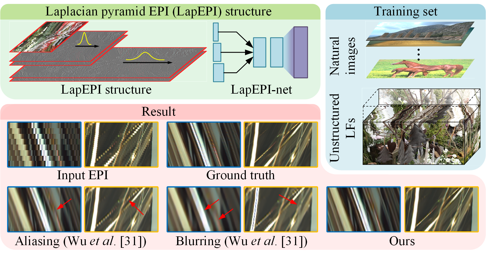

arXiv 2019
LapEPI-Net: A Laplacian Pyramid EPI Structure for Learning-based Dense Light Field Reconstruction
Gaochang Wu1, 2, Yebin Liu1, Lu Fang3, Tianyou Chai2
1. Tsinghua University, 2. Northeastern University, 3. Tsinghua-Berkeley Shenzhen Institute
Abstract
For dense sampled light field (LF) reconstruction problem, existing approaches focus on a depth-free framework to achieve non-Lambertian performance. However, they trap in the trade-off “either aliasing or blurring” problem, i.e., pre-filtering the aliasing components (caused by the angular sparsity of the input LF) always leads to a blurry result. In this paper, we intend to solve this challenge by introducing an elaborately designed epipolar plane image (EPI) structure within a learning-based framework. Specifically, we start by analytically showing that decreasing the spatial scale of an EPI shows higher efficiency in addressing the aliasing problem than simply adopting pre-filtering. Accordingly, we design a Laplacian Pyramid EPI (LapEPI) structure that contains both low spatial scale EPI (for aliasing) and high-frequency residuals (for blurring) to solve the trade-off problem. We then propose a novel network architecture for the LapEPI structure, termed as LapEPInet. To ensure the non-Lambertian performance, we adopt a transfer-learning strategy by first pre-training the network with natural images then fine-tuning it with unstructured LFs. Extensive experiments demonstrate the high performance and robustness of the proposed approach for tackling the aliasing-or-blurring problem as well as the nonLambertian reconstruction.

Fig 1. We introduce a Laplacian Pyramid EPI (LapEPI) structure for solving the aliasing-or-blurring problem.
Results

Fig 2. Comparison of the results on the light fields from gantry system.
Fig 3. Comparison of the results on the LFs from Lytro Illum.
Fig 4. Comparison of the results on the microscope light fields.
Technical Paper
Demo Video
Citation
Gaochang Wu, Yebin Liu, Lu Fang, Tianyou Chai. "LapEPI-Net: A Laplacian Pyramid EPI structure for Learning-based Dense Light Field Reconstruction". ArXiv:1902.06221 2019
@misc{wu2019lapepi,
title={LapEPI-Net: A Laplacian Pyramid EPI structure for Learning-based Dense Light Field Reconstruction},
author={Gaochang Wu and Yebin Liu and Lu Fang and Tianyou Chai},
year={2019},
eprint={1902.06221},
archivePrefix={arXiv},
primaryClass={cs.CV}
}